Twoje płatności w rytmie kalendarza.
Planuj rachunki i subskrypcje, ustawiaj przypomnienia i miej klarowny podgląd miesiąca. Dane zostają na urządzeniu.
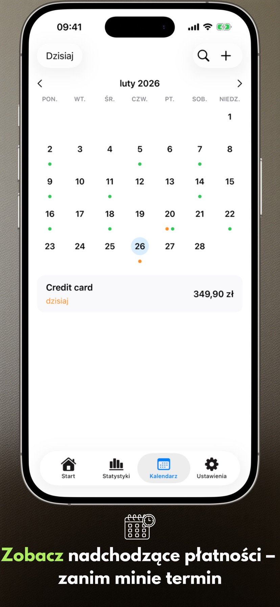
Nowości w wersji 2.3.1
- Poprawione działanie widżetów.
- Lista płatności wyświetla się poprawnie na Macu.
Ekrany aplikacji
Sześć kluczowych ekranów na iPhonie i iPadzie, które pokazują, jak wygodnie planować z Payment Calendar.
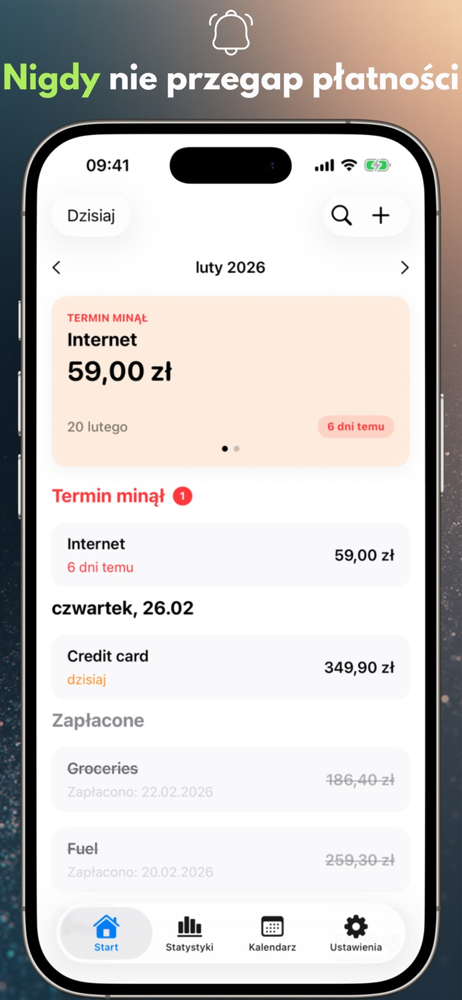
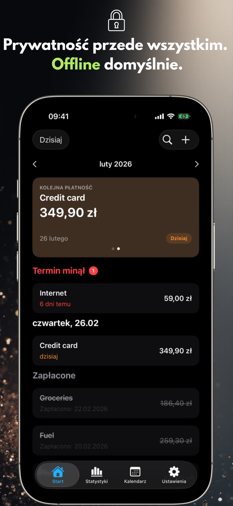
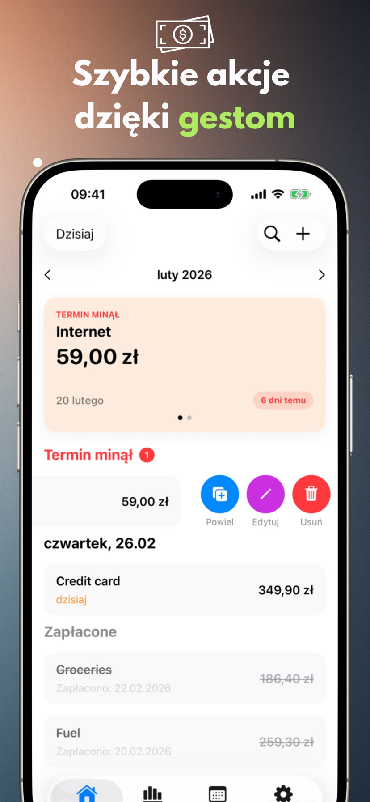
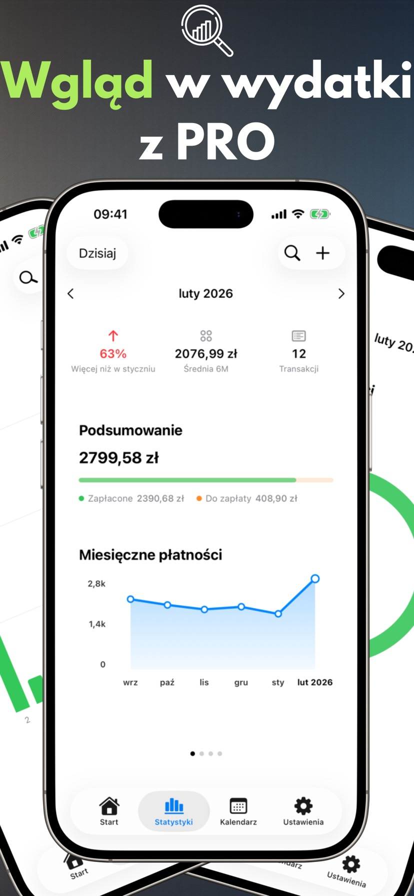
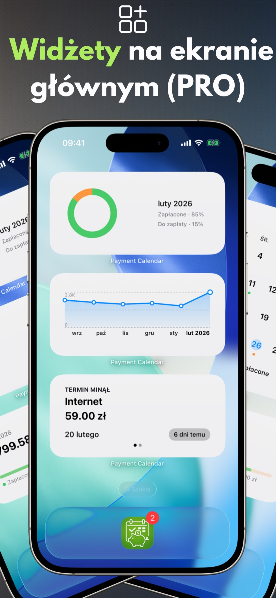
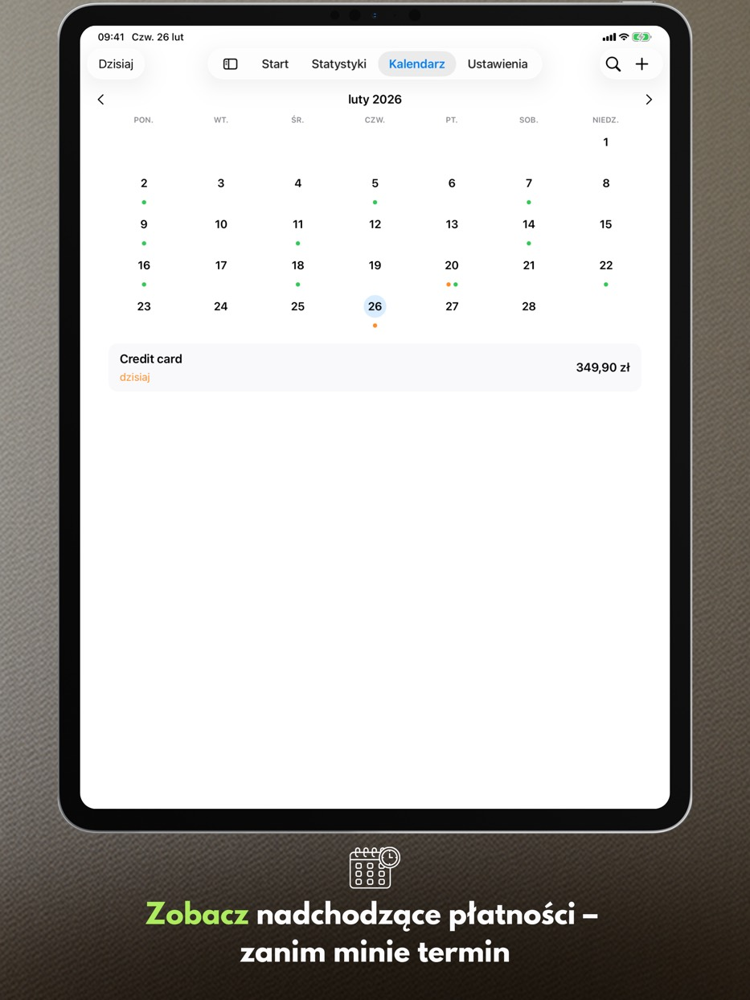
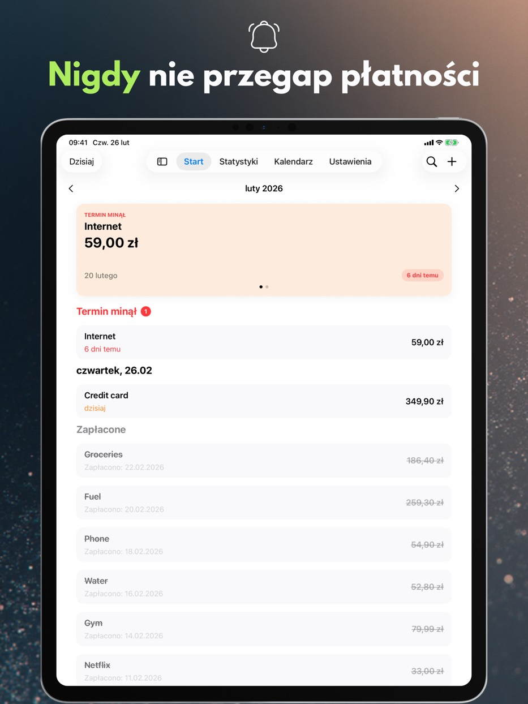
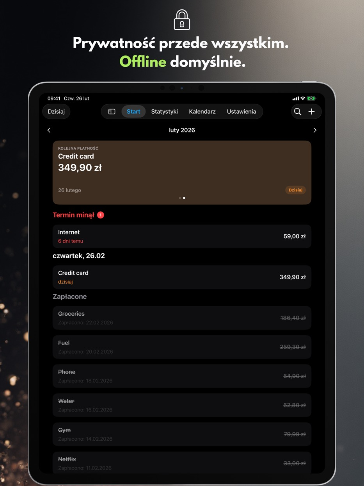
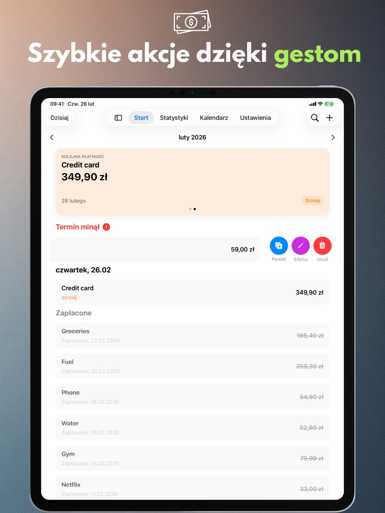
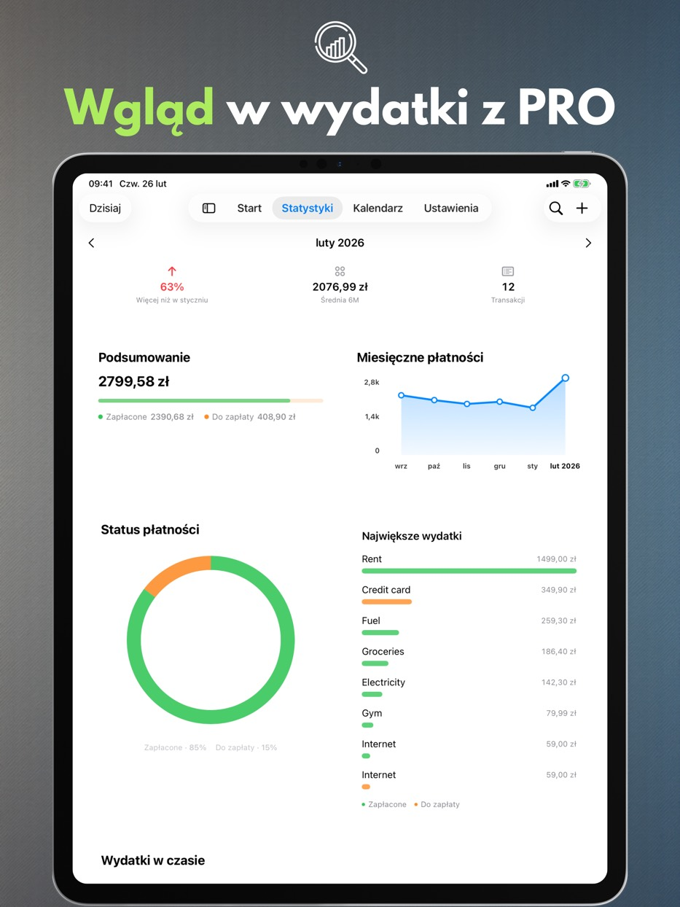
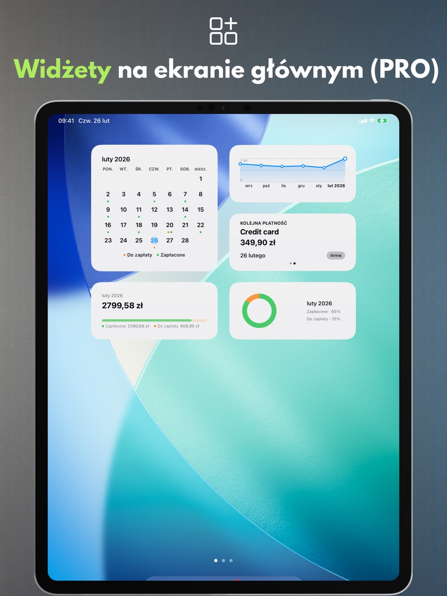
Funkcje aplikacji
Wszystko poniżej działa bez opłat i bez zakładania konta: klarowny widok miesiąca, szybkie dodawanie płatności i przypomnienia, które pozwalają spokojnie planować wydatki.
Kalendarz płatności
Widzisz nadchodzące terminy i listę płatności na jednym ekranie.
Przypomnienia
Ustaw powiadomienia na dzień płatności lub kilka dni wcześniej.
Gesty i szybkie akcje
Oznacz jako opłacone, edytuj lub duplikuj jednym ruchem.
Wyszukiwarka
Znajduj płatności po nazwie, kwocie lub notatce.
Kosz
Usunięte płatności czekają w Koszu 30 dni — możesz je przywrócić.
Ustawienia pod siebie
Waluta, pierwszy dzień tygodnia, motyw i preferencje aplikacji.
Wsparcie dla iPada
Tryb okien i Split View, a także klawiatura i skróty klawiszowe.
Dostępność
Aplikacja skaluje się z systemową wielkością tekstu, respektuje „Ogranicz ruch" i rozróżnia stany płatności nie tylko kolorem.
Prywatność
Twoje dane zostają na urządzeniu.
Payment Calendar nie wymaga konta i nie śledzi aktywności. Dane są zapisywane lokalnie, a synchronizacja iCloud działa tylko po włączeniu w ustawieniach.
Bez reklam i analiz
Nie używamy zewnętrznych SDK do analityki i reklam.
Kontrola danych
Możesz usunąć dane w aplikacji lub skasować je wraz z aplikacją.
Funkcje PRO
Płatne rozszerzenie: statystyki, widżety, płatności cykliczne, synchronizacja i eksport. Do wyboru subskrypcja miesięczna, roczna albo zakup dożywotni.
Statystyki i trendy
Podsumowania miesiąca i trend z ostatnich 6 miesięcy.
Widżety
Cztery widżety na ekran główny: najbliższa płatność, podsumowanie miesiąca, trend i siatka miesiąca.
Płatności cykliczne
Automatycznie twórz powtarzające się płatności.
iCloud Sync
Synchronizacja między urządzeniami po włączeniu opcji.
Eksport CSV/PDF
Udostępniaj zestawienia i archiwizuj dane.
Dostępne języki
Payment Calendar jest dostępny po polsku, angielsku, hiszpańsku, niemiecku, francusku, włosku, ukraińsku, szwedzku, chińsku (uproszczonym), japońsku oraz portugalsku (Brazylia).
Często zadawane pytania (FAQ)
Poznaj odpowiedzi na najpopularniejsze pytania dotyczące Payment Calendar.
Zanim pobierzesz
Jak nie zapomnieć o płatności rachunku?
Payment Calendar pokazuje wszystkie zbliżające się płatności w widoku miesiąca i wysyła przypomnienia przed terminem, dzięki czemu widzisz z wyprzedzeniem, co i kiedy trzeba opłacić.
Jak śledzić subskrypcje, żeby nie płacić za niepotrzebne?
Dodaj subskrypcje jako płatności cykliczne (funkcja PRO) — aplikacja automatycznie przypomina o kolejnych odnowieniach, dzięki czemu łatwiej zauważyć i anulować te, z których już nie korzystasz.
Czy jest aplikacja jak kalendarz, ale do rachunków i płatności?
Tak, to dokładnie idea Payment Calendar — widok miesiąca pokazuje płatności zamiast wydarzeń, z oznaczeniem, co jest opłacone, a co jeszcze czeka na termin.
Jak zarządzać płatnościami bez zakładania konta?
Payment Calendar nie wymaga rejestracji ani logowania — instalujesz aplikację i od razu dodajesz płatności. Dane zostają lokalnie na urządzeniu, chyba że sam włączysz opcjonalną synchronizację iCloud.
Czym różni się Payment Calendar od zwykłego kalendarza w telefonie?
Standardowy kalendarz pokazuje wydarzenia, nie płatności — nie ma statusu "opłacone / do zapłaty", przypomnień dopasowanych do rachunków ani wglądu w wydatki. Payment Calendar jest zaprojektowany specjalnie pod płatności: z kwotami, walutami, cyklicznością i statystykami tego, ile faktycznie wydajesz miesięcznie.
Podstawy
Czym jest aplikacja Payment Calendar?
Payment Calendar to aplikacja na iPhone’a i iPada (iOS/iPadOS) do śledzenia rachunków i nadchodzących płatności w formie kalendarza. Pozwala szybko zobaczyć, co jest do zapłaty, i oznaczyć płatności jako opłacone.
Czy aplikacja działa offline?
Tak. Aplikacja działa offline i nie wymaga konta ani połączenia z internetem. Dane są przechowywane lokalnie na urządzeniu. Opcjonalna synchronizacja przez iCloud (w wersji PRO) umożliwia dostęp na wielu urządzeniach Apple.
Na jakich urządzeniach działa Payment Calendar?
Aplikacja działa na iPhonie i iPadzie z systemem iOS/iPadOS w wersji 18.0 lub nowszej. Można ją też zainstalować na Macu z procesorem Apple silicon — działa tam jako aplikacja iPadowa („Designed for iPad”), a nie jako osobna wersja na macOS.
Prywatność i dane
Czy moje dane finansowe są bezpieczne?
Tak. Payment Calendar nie zbiera danych użytkownika i nie wymaga logowania. Dane pozostają na Twoim urządzeniu, a synchronizacja (opcjonalna, iCloud w wersji PRO) odbywa się w ramach ekosystemu Apple.
Czy Payment Calendar łączy się z moim kontem bankowym?
Nie. Payment Calendar nie łączy się z bankiem ani nie pobiera automatycznie transakcji — płatności dodajesz ręcznie. To świadomy wybór: aplikacja od początku stawia na prywatność i nie potrzebuje dostępu do Twojego konta bankowego, żeby działać.
Funkcje
Czy mogę dodawać płatności cykliczne i subskrypcje?
Tak. Możesz dodawać płatności cykliczne, takie jak abonamenty, subskrypcje i rachunki miesięczne. Funkcja jest dostępna w wersji PRO.
Czy aplikacja wysyła przypomnienia o zbliżających się płatnościach?
Tak. Możesz ustawić przypomnienia, aby nie przegapić żadnej płatności.
Jakie waluty obsługuje Payment Calendar?
Aplikacja obsługuje 22 waluty, m.in. złotego, euro, dolara amerykańskiego, funta, koronę czeską, szwedzką, norweską i duńską, forinta, hrywnę, jena, juana, reala, a także peso kolumbijskie, tugrik mongolski, peso meksykańskie, peso chilijskie i dolara nowozelandzkiego. Formatowanie (symbole, separatory, zaokrąglenia) dopasowuje się automatycznie do regionu Twojego urządzenia.
Czy mogę wyeksportować swoje płatności?
Tak, w wersji PRO. Możesz wyeksportować dane do pliku CSV lub PDF, np. do raportu lub archiwizacji.
Czy mogę poprawić faktyczną datę zapłaty?
Tak. Formularz edycji opłaconej płatności ma pole "Zapłacono", w którym możesz ustawić rzeczywistą datę zapłaty. Statystyki nadal grupują płatności według terminu, nie daty zapłacenia.
Czy jest widget na ekran główny?
Tak, w wersji PRO. Do wyboru są cztery widżety na ekran główny: najbliższa płatność, podsumowanie miesiąca, trend wydatków i siatka miesiąca — wszystkie bez otwierania aplikacji.
Usunąłem płatność przez przypadek — da się ją odzyskać?
Tak. Usunięte płatności trafiają do Kosza i czekają w nim 30 dni. Kosz znajdziesz w Ustawieniach, a przywrócenie wpisu to jedno kliknięcie.
Czy Payment Calendar to aplikacja do zarządzania budżetem domowym?
Nie. To kalendarz rachunków, który pomaga śledzić nadchodzące i opłacone płatności. Nie obsługuje dochodów, salda konta ani budżetowania.
Synchronizacja i języki
Czy dane synchronizują się między iPhonem a iPadem?
Tak, jeśli włączysz opcjonalną synchronizację iCloud (funkcja PRO) — wtedy Twoje płatności są dostępne na wszystkich urządzeniach Apple zalogowanych na to samo konto iCloud. Bez tej opcji dane zostają lokalnie na jednym urządzeniu.
W jakich językach dostępna jest aplikacja?
Payment Calendar jest dostępny w 11 językach: polskim, angielskim, hiszpańskim, niemieckim, francuskim, włoskim, ukraińskim, szwedzkim, chińskim uproszczonym, japońskim i portugalskim (Brazylia).
Platformy
Czy Payment Calendar jest dostępny na Androida?
Nie. Payment Calendar jest aplikacją na iPhone'a i iPada (iOS/iPadOS); na Macu z Apple silicon działa w trybie „Designed for iPad”. Wersji na Androida nie ma.
Czy jest wersja na Apple Watch?
Jeszcze nie. Apple Watch jest na liście pomysłów na przyszłość — nie mamy jeszcze terminu.
Cena i PRO
Czy mogę korzystać z aplikacji bez płatnej subskrypcji?
Tak. Podstawowe funkcje są dostępne za darmo. Funkcje PRO, takie jak płatności cykliczne i synchronizacja iCloud, wymagają subskrypcji lub zakupu jednorazowego.
Ile kosztuje wersja PRO i czy mogę anulować subskrypcję?
Cena zależy od regionu i jest widoczna w aplikacji oraz w App Store. Do wyboru jest subskrypcja miesięczna, roczna lub jednorazowy zakup dożywotni (Lifetime). Subskrypcją zarządzasz i anulujesz w ustawieniach Apple ID, tak jak każdą inną subskrypcję w App Store.
Wsparcie
Brakuje mi waluty albo mam pomysł na nową funkcję — co mogę zrobić?
Napisz na payment_calendar@icloud.com. Każdy e-mail czytam i odpowiadam osobiście — zgłoszenia i pomysły od użytkowników realnie trafiają do kolejnych wersji.
Gotowy na porządek w płatnościach?
Payment Calendar pomaga zamknąć miesiąc bez zaskoczeń.